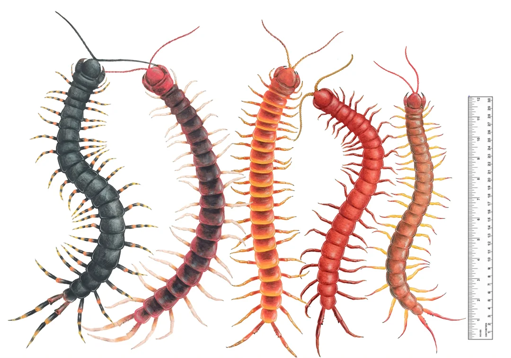
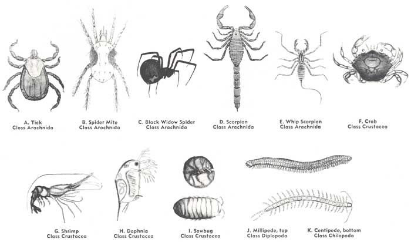
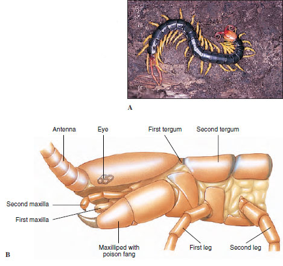

Centipedes are very different from millipedes. But many people mistaken the two even if their apperences are very much different from each other. The most common centipede people speak about is the scolopendra centipede.
The scolopendra centipede is part of the many other centipedes in the Arthropod family, inculding the millipede. But Athropods are a species of animals not an insect. They're under an umbrella of many other bug like animals.
But when it comes to centipedes, they have difference characteristics than a millipede. A centipedes only has one leg in each segmant. Their two back legs are like hooks for defence and to intimidate the head of the body so they can wip around to strike to whoever is behind them.
The head of the centipede is a different than the millipede too. The biggest contrast of the two is the fact centipedes has fangs filled with venom. In the diagram you can see how the centipede body is flaten, it helps them be able to squeeze themself into tight spaces and cracks of any size.
Back